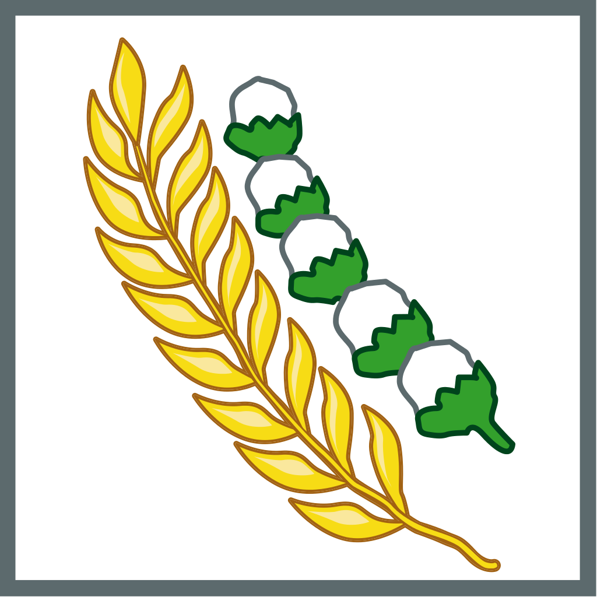

PANCASILA
Ketuhanan yang Maha Esa
Kemanusiaan yang Adil dan Beradab
Persatuan Indonesia
Kerakyatan yang dipimpin oleh hikmat kebijaksanaan dalam permusyawaratan perwakilan

Keadilan Sosial Bagi Seluruh Rakyat Indonesia